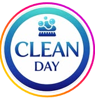
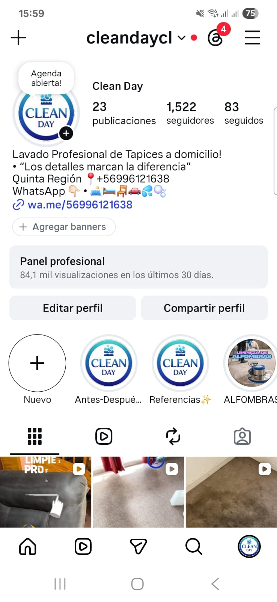

Limpieza de sofás
Limpieza profunda de sofás de 1, 2 y 3 cuerpos, con proceso de sanitización, desmanchado y extracción.

LIMPIEZA PROFESIONAL A DOMICILIO
Recuperamos la limpieza, frescura y presentación de tus espacios con equipos profesionales de inyección y extracción.
Síguenos en Instagram

Lavado profesional de tapices a domicilio
QUÉ HACEMOS
Limpieza profunda de sofás de 1, 2 y 3 cuerpos, con proceso de sanitización, desmanchado y extracción.
Servicio ideal para renovar colchones, disminuir suciedad acumulada, malos olores y presencia de ácaros.
Limpieza de asientos, piso, techo y maleta según el plan contratado. Ideal para renovar el interior de tu vehículo.
Servicio para alfombras decorativas y alfombras muro a muro, eliminando suciedad, polvo acumulado y malos olores.
CONFIANZA Y CALIDAD
✔ Atención a domicilio
✔ Equipos profesionales de limpieza
✔ Productos adecuados para tapices y alfombras
✔ Servicio cuidadoso, responsable y detallado
✔ Atención en Quilpué, Viña del Mar, Valparaíso, Concón y alrededores
VALORES
El servicio de limpieza de tapices incluye desmanchado, sanitización, desinfección y eliminación de ácaros. Aplicamos productos de primera calidad.
$39.990
$44.990
$34.990
$39.990
$29.990
$24.990
$24.990
$39.990
Asientos: $24.990
Asientos + piso: $34.990
Asientos + piso + techo: $44.990
Sofás en L, futones o sofás de mayor tamaño pueden cotizarse directamente por WhatsApp. Los valores pueden variar según tamaño, estado del tapiz, manchas especiales y ubicación.
SERVICIO ADICIONAL
El servicio de eliminación de orina consiste en tratar la enzima que queda en los tapices. Utilizamos productos de primera calidad, usados y comprobados con excelentes resultados.
La eliminación de orina es un servicio que se aplica de manera distinta en cada caso. Es importante cotizar correctamente para aplicar el producto en la cantidad que corresponda.
Este servicio se cobra según la cantidad de litros utilizados.
$6.000
$10.000
RESULTADOS
Próximamente agregaremos fotografías reales de trabajos realizados por Clean Day.
Antes y después de limpieza profunda.
Resultados de sanitización y extracción.
Tapiz vehicular limpio y renovado.
Limpieza de alfombras decorativas y muro a muro.
REDES SOCIALES
Revisa resultados, historias, referencias y trabajos realizados directamente en nuestro perfil.
En nuestro Instagram compartimos trabajos reales, antes y después, limpieza de alfombras, tapices, vehículos y servicios especiales.
Ir a InstagramEscanea el código para visitar nuestro perfil.
DUDAS FRECUENTES
No queda completamente seco al momento de finalizar el servicio. El tiempo de secado puede variar entre 2 y 24 horas, dependiendo de la ventilación, clima y tipo de tela.
Sí, realizamos atención a domicilio en Quilpué, Viña del Mar, Valparaíso, Concón, Villa Alemana, Reñaca, Placilla y sectores cercanos.
Muchas manchas pueden disminuir considerablemente o eliminarse, pero el resultado depende del tipo de mancha, tiempo de exposición y estado del tapiz.
Escríbenos para cotizar tu servicio de limpieza de tapices, alfombras, colchones o tapiz vehicular.
Asistente de cotización
Hola 👋 ¿Qué servicio quieres cotizar?
Limpieza de sofá Limpieza de colchón Tapiz vehicular Eliminación de orina